Candidate List 20251228Previous Day Next Day
Section 1: New Sources (age<1d) Section 2: Old (1-5d) sources observed last nightplaceholder
Section 1: New Afterglow/FBOT Cands Last Night (1)
1. ZTF25ackyfnb (FBOT?) [Back to Top] [Share] [Trigger Swift] [Fritz] [Lasair]RA, Dec: 172.31819, 20.58564 11h29m16.36s, 20d35m8.29sGalactic (l, b): 227.73424, 70.13817 ext(g-r) = 0.023 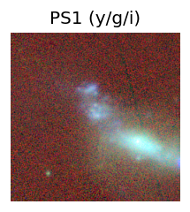
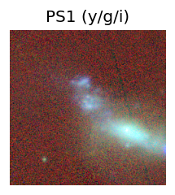
TESS: Sectors [22 49]
PS1: 0 sources in 3 arcsec
LegacySurvey: 1 sources in 3 arcsec Closest: d = 0.44 arcsec, 287.4 deg (east of north) photoz=0.12 (68% bounds 0.01, 0.79), type=PSF peak abs mag = -20.74 (68% bounds -15.11, -25.55)
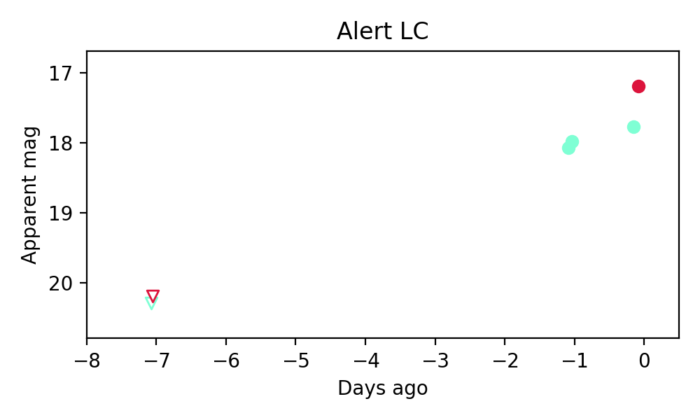
Rise Rate:
g: 0.39 mag/day
r: -99 mag/day
i: -99 mag/day
Fade Rate:
g: -99 mag/day
r: -99 mag/day
i: -99 mag/day
Section 2: Older Sources Observed Last Night (3)
0. ZTF25ackqjvp (Afterglow?FBOT?) [Back to Top] [Share] [Trigger Swift] [Fritz] [Lasair]RA, Dec: 138.53665, 50.19511 9h14m8.80s, 50d11m42.40sGalactic (l, b): 168.29542, 43.04615 ext(g-r) = 0.016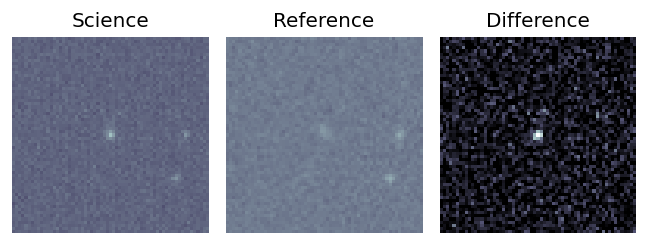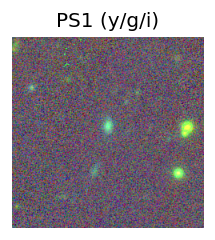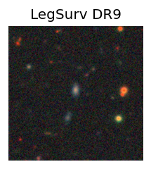
TESS: Sectors [21 47]
SDSS (10 arcsec):Found SDSS phot-z: z=0.15; peak abs mag = -19.85
PS1: 0 sources in 3 arcsec
LegacySurvey: 1 sources in 3 arcsec Closest: d = 1.49 arcsec, 3.1 deg (east of north) photoz=0.15 (68% bounds 0.11, 0.19), type=EXP peak abs mag = -19.79 (68% bounds -19.05, -20.3)
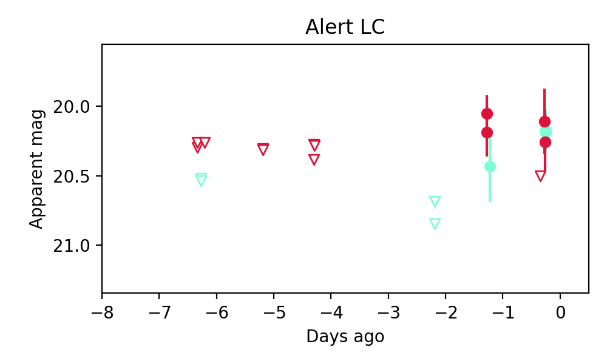
Extinction-corrected gr color:
From alerts: 0.02 +/- 0.22 mag
Consistent with synchrotron, g-r>0!
Rise Rate:
g: 0.51 mag/day
r: 0.1 mag/day
i: -99 mag/day
Fade Rate:
g: -99 mag/day
r: -99 mag/day
i: -99 mag/day
1. ZTF25ackscpw (Afterglow?) [Back to Top] [Share] [Trigger Swift] [Fritz] [Lasair]RA, Dec: 186.4621, 65.95108 12h25m50.90s, 65d57m3.89sGalactic (l, b): 127.06698, 50.97123 ext(g-r) = 0.016
 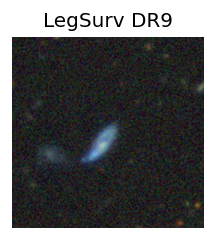
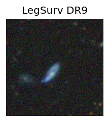
TESS: Sectors [ 14 15 21 22 48 75 121]
SDSS (10 arcsec):Found SDSS phot-z: z=0.05; peak abs mag = -18.08
PS1: 0 sources in 3 arcsec
LegacySurvey: 1 sources in 3 arcsec Closest: d = 0.88 arcsec, 103.4 deg (east of north) photoz=0.06 (68% bounds 0.03, 0.12), type=EXP peak abs mag = -18.39 (68% bounds -16.83, -19.87)
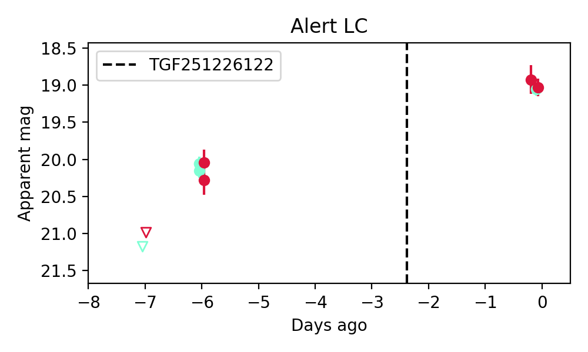
Extinction-corrected gr color:
From alerts: 0.04 +/- 0.13 mag
Consistent with synchrotron, g-r>0!
Rise Rate:
g: 1.12 mag/day
r: 0.93 mag/day
i: -99 mag/day
Fade Rate:
g: -99 mag/day
r: -99 mag/day
i: -99 mag/day
2. ZTF25ackyjjn (FBOT?) [Back to Top] [Share] [Trigger Swift] [Fritz] [Lasair]RA, Dec: 221.62871, 23.55889 14h46m30.89s, 23d33m32.02sGalactic (l, b): 31.54725, 63.81335 ext(g-r) = 0.037

TESS: Sectors [24 50 51 77]
SDSS (10 arcsec):Found SDSS phot-z: z=0.09; peak abs mag = -19.58
PS1: 0 sources in 3 arcsec
LegacySurvey: 1 sources in 3 arcsec Closest: d = 0.95 arcsec, 278.3 deg (east of north) photoz=0.39 (68% bounds 0.16, 0.69), type=REX peak abs mag = -22.89 (68% bounds -20.71, -24.38)
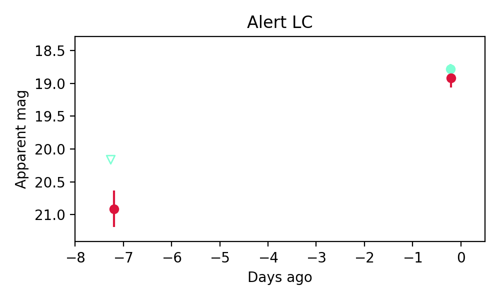
Extinction-corrected gr color:
From alerts: -0.17 +/- 0.16 mag
Rise Rate:
g: 0.2 mag/day
r: 0.28 mag/day
i: -99 mag/day
Fade Rate:
g: -99 mag/day
r: -99 mag/day
i: -99 mag/day